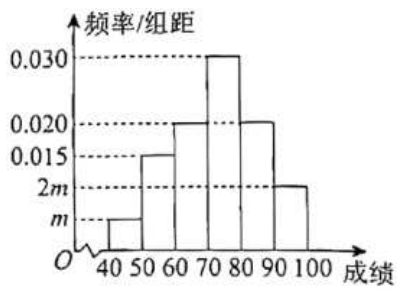
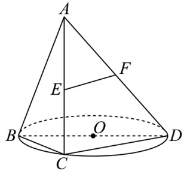
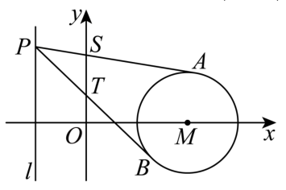

01 【来源：徐汇26一模·1】
查看所属专题设复数 （其中 为虚数单位），则 ______。
作答区
整卷阅读 · 学生版 · 21 题
按来源题号排列；内容来自分类汇编，仍需回源核对。
没有找到匹配题目。
设复数 （其中 为虚数单位），则 ______。
设集合 ，，则 ______。
函数 的值域为______。
若幂函数 的图象经过 ，则此幂函数的表达式为______。
设向量 ，，则 在 上的数量投影为______。
相关部门在上海市随机调查了 户居民六月份的用电量（单位：），从小到大排列依次为 ，则这 户居民用电量的第 百分位数为______。
已知 ，则 ______。
一个底面积为 的正四棱柱的所有顶点都在同一球面上，若该球的表面积为 ，则该正四棱柱的高为______。
从 名男生和 名女生中选取 人组成一个宣传小组，其中男生和女生都不少于 人的选法有______种。
设 若实数 满足 ，且 ，则 的最小值为______。
某城市核心区域可看作一个平面，市中心为点 ，城市有两个交通枢纽站点 ，其中站点 在市中心 的正东方向，距离 点 公里，站点 在市中心 的正北方向，距离 点也是 公里。为了动态调整交通信号，相关部门计划在距离中心 点 公里的位置，设置一个移动数据采集点 ，通过监测 的大小来优化信号。当 最大时，______（结果精确到 ）。
已知数列 满足：，对任意的正整数 均有 ，若存在正整数 （），使得所有数列 均满足 ，则 的最大值为______。
已知 为实数，则“ 是有理数”是“ 是有理数”的（ ）条件。
A. 充分非必要 B. 必要非充分 C. 充要 D. 既非充分又非必要
用简单随机抽样的方法抽取某个品种的小麦样本 株，测得麦穗长度（单位：），以其整数部分作为“茎”，小数部分作为“叶”绘制茎叶图如图所示。用该样本数据估计此品种小麦麦穗长度平均为（ ）（结果精确到 ）。
| 茎 | 叶 |
|---|---|
| 7 | 8 |
| 8 | 6 9 |
| 9 | 1 6 7 7 8 |
| 10 | 0 2 6 |
| 11 | 2 7 |
A. B. C. D.
设 为椭圆 上一动点， 分别为圆 和圆 上的动点，则 不可能为（ ）。
A. B. C. D.
已知 ，集合 （ 为 维向量）。若 ，其中 （，），，定义 ，设满足 的 的个数为 。关于下列两个命题的判断：
①当 时，则 ；
②当 ， 是正整数时，则 。
说法正确的是（ ）。
A. ①和②均为真命题
B. ①和②均为假命题
C. ①为真命题，②为假命题
D. ①为假命题，②为真命题
在 中，角 的对边分别为 ，已知 ，。
（1）若 ，求 的面积。
（2）若内角 的对边 ，求角 的正弦值及 外接圆的半径 。
某校高三年级学生参加了一次时政知识竞赛，为了了解本次竞赛的成绩情况，从所有答卷中随机抽取 份作为样本进行统计，将样本的成绩（满分 分，成绩均为不低于 分的整数）分成六段：、、、，得到如图所示的频率分布直方图。

（1）求实数 的值；若年级准备选取 分及以上的学生进入下一轮竞赛，已知该校高三年级有 名学生，估计该校高三年级参加下一轮竞赛的人数。
（2）王老师抽取了 名参加竞赛的学生，他们的分数为：。已知这 个分数的平均数 ，标准差 ，若剔除其中的 和 这 个分数，求剩余 个分数的平均数与方差。
如图，已知 是 的直径，点 是 上异于 的一点。设过点 的直线 垂直于 所在的平面，且 。

（1）若 为 中点， 为线段 的中点， 为线段 上一点，且 平面 。求证： 为线段 中点，并求三棱锥 的体积。
（2）记二面角 的平面角为 ，求 的最小值，并指出其取得最小值时点 的位置。
已知抛物线 （）的焦点为 ，准线为 。

（1）若点 在抛物线 上，求 所在直线的斜率。
（2）若准线 ，点 为抛物线 准线 上的一个动点，过点 作圆 的两条切线，切点分别为 。若两条切线 与 轴分别交于点 ，求 的最小值。
（3）若点 到准线 的距离为 ，过抛物线 的准线 上一点 作圆 （）的两条切线 ，且 分别与 交于 两点和 两点。问：是否存在某个圆 ，使得当点 运动时， 为定值？若存在，求出该定值；若不存在，请说明理由。
已知函数 的定义域为 ，若其导函数 在 上是严格减函数，则称 是一个“S函数”。
（1）设 ，，分别判断 、 是否为“S函数”，并说明理由。
（2）已知数列 是公差为 （）的等差数列，且 的各项都为正数，若定义在 上的函数 是“S函数”，求证：。
（3）已知“S函数” 的定义域为 ，不等式 的解集为 。证明：函数 在 上是严格减函数。